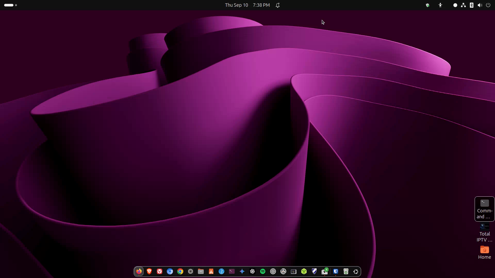

Browser, email, printers
Firefox (and friends), webmail or Thunderbird, and adding a printer.

media/images/10-browser-email.png with a GTR capture when ready.
Steps
- Firefox is usually preinstalled. Open it from the dock. Sign into bookmarks sync if you used Firefox on Windows.
- Chromium or Google Chrome can be installed from App Center / Flathub if you prefer.
- Email: use Gmail/Outlook in the browser, or install Thunderbird for a desktop client.
- Printers: Settings → Printers → Add Printer. Many network printers appear automatically. For others, install the maker’s Linux driver or use IPP.
PDF tip Ubuntu opens PDFs in Document Viewer (Evince) or Papers depending on version. LibreOffice handles Office-like files well for many documents.
If a printer only has Windows drivers, check whether it supports AirPrint / IPP everywhere — those often work on Linux without vendor software.